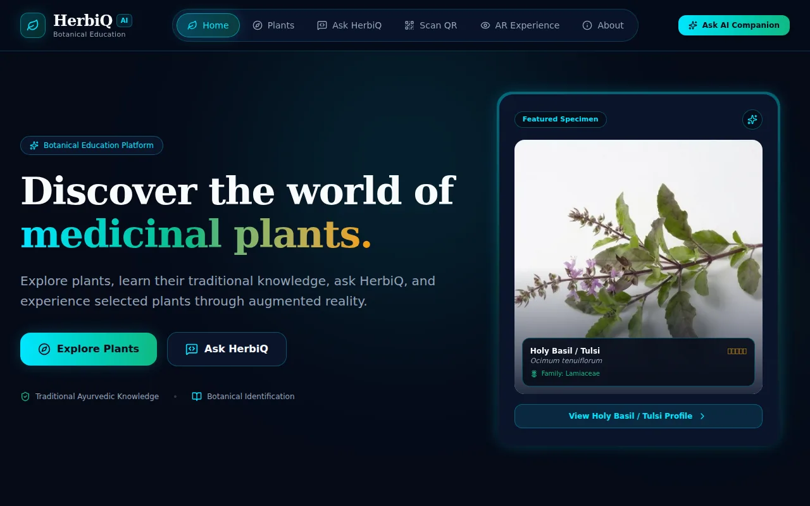

Identify the plant
The demonstrated workflow uses ArUco markers to identify a plant and retrieve its local record.
ROBOTICS × BOTANICAL EDUCATION
A garden guide that connects plants, people and technology.

01 / THE IDEA
A medicinal garden holds a lot of knowledge, but a plant label can only say so much. HerbiQ is Team Delta Malabar’s Ayurvedic heritage guide robot, designed to help visitors discover plants through a touchscreen and spoken interaction.
02 / MY CONTRIBUTION
As part of Team Delta Malabar, I helped coordinate the project, worked on AI integration and researched the plant information. My work connected the visitor experience with the plant database and the hardware experiments. HerbiQ was a team effort, with software, electronics, mechanical work and presentation coming together.
Team recognition: Silver Badge at WRO India National Level 2026, Hyderabad, for Team Delta Malabar’s HerbiQ project.
03 / THE EXPERIENCE
The demonstrated workflow uses ArUco markers to identify a plant and retrieve its local record.
A touchscreen, local plant information and multilingual voice interaction make the content approachable.
Raspberry Pi handles the interface and plant data; ESP32-based hardware supports sensing and motor control.
The visitor website offers plant browsing, QR discovery and AR-ready plant viewing.
04 / BUILD NOTES
The difficult part was getting several small systems to work together: voice input, the plant database, the display and the robot hardware. During development, storage instability interrupted Raspberry Pi work, and an ESP32-CAM hardware repair was needed before image capture could continue.
I worked through individual components before joining the full system. English and Malayalam voice input/output were tested, and an offline chat experiment connected the Raspberry Pi interface to a phone-hosted model over local Wi-Fi.
05 / WHAT I LEARNED
06 / STILL EXPLORING
The next focus is making the visitor experience more reliable and expanding the educational content. Direct visual recognition and plant-health analysis remain exploration areas; they are separate from the demonstrated marker-based workflow.
KEEP EXPLORING
Kerala Routes ↗